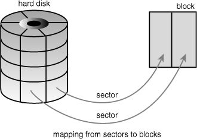
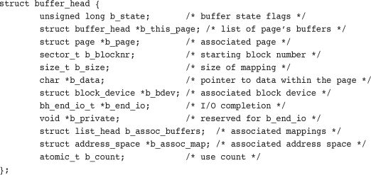
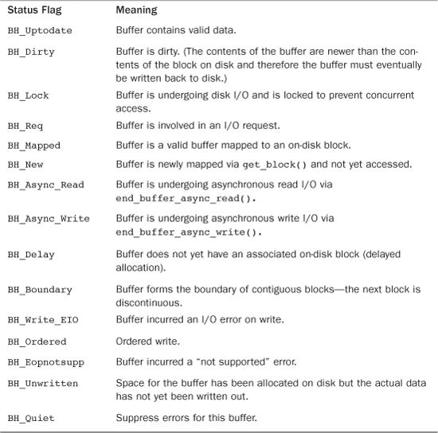
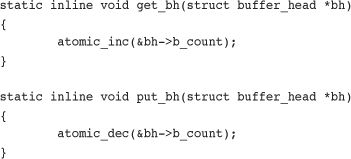
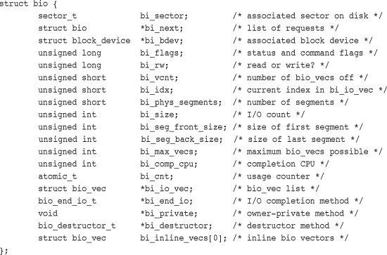
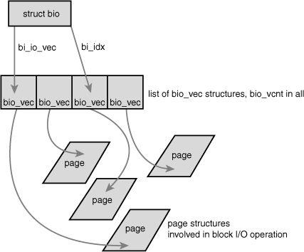
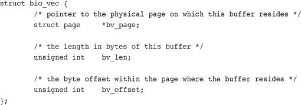
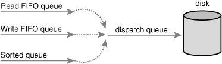
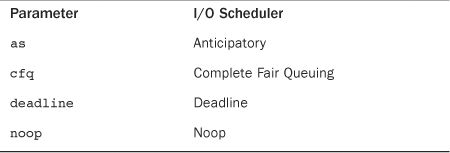

Block devices are hardware devices distinguished by the random (that is, not necessarily sequential) access of fixed-size chunks of data. The fixed-size chunks of data are called blocks. The most common block device is a hard disk, but many other block devices exist, such as floppy drives, Blu-ray readers, and flash memory. Notice how these are all devices on which you mount a filesystem—filesystems are the lingua franca of block devices.
The other basic type of device is a character device. Character devices, or char devices, are accessed as a stream of sequential data, one byte after another. Example character devices are serial ports and keyboards. If the hardware device is accessed as a stream of data, it is implemented as a character device. On the other hand, if the device is accessed randomly (nonsequentially), it is a block device.
The difference comes down to whether the device accesses data randomly—in other words, whether the device can seek to one position from another. As an example, consider the keyboard. As a driver, the keyboard provides a stream of data. If you type wolf, the keyboard driver returns a stream with those four letters in exactly that order. Reading the letters out of order, or reading any letter but the next one in the stream, makes little sense. The keyboard driver is thus a char device; the device provides a stream of characters that the user types onto the keyboard. Reading from the keyboard returns a stream first with w, then o, then l, and ultimately f. When no keystrokes are waiting, the stream is empty. A hard drive, conversely, is quite different. The hard drive’s driver might ask to read the contents of one arbitrary block and then read the contents of a different block; the blocks need not be consecutive. The hard disk’s data is accessed randomly, and not as a stream; therefore, the hard disk is a block device.
Managing block devices in the kernel requires more care, preparation, and work than managing character devices. Character devices have only one position—the current one—whereas block devices must be able to navigate back and forth between any location on the media. Indeed, the kernel does not have to provide an entire subsystem dedicated to the management of character devices, but block devices receive exactly that. Such a subsystem is a necessity partly because of the complexity of block devices. A large reason, however, for such extensive support is that block devices are quite performance sensitive; getting every last drop out of your hard disk is much more important than squeezing an extra percent of speed out of your keyboard. Furthermore, as you will see, the complexity of block devices provides a lot of room for such optimizations. The topic of this chapter is how the kernel manages block devices and their requests. This part of the kernel is known as the block I/O layer. Interestingly, revamping the block I/O layer was the primary goal for the 2.5 development kernel. This chapter covers the all-new block I/O layer in the 2.6 kernel.
The smallest addressable unit on a block device is a sector. Sectors come in various powers of two, but 512 bytes is the most common size. The sector size is a physical property of the device, and the sector is the fundamental unit of all block devices—the device cannot address or operate on a unit smaller than the sector, although many block devices can operate on multiple sectors at one time. Most block devices have 512-byte sectors, although other sizes are common. For example, many CD-ROM discs have 2-kilobyte sectors.
Software has different goals and therefore imposes its own smallest logically addressable unit, which is the block. The block is an abstraction of the filesystem—filesystems can be accessed only in multiples of a block. Although the physical device is addressable at the sector level, the kernel performs all disk operations in terms of blocks. Because the device’s smallest addressable unit is the sector, the block size can be no smaller than the sector and must be a multiple of a sector. Furthermore, the kernel (as with hardware and the sector) needs the block to be a power of two. The kernel also requires that a block be no larger than the page size (see Chapter 12, “Memory Management,” and Chapter 19, “Portability”).1 Therefore, block sizes are a power-of-two multiple of the sector size and are not greater than the page size. Common block sizes are 512 bytes, 1 kilobyte, and 4 kilobytes.
1 This is an artificial constraint that could go away in the future. Forcing the block to remain equal to or smaller than the page size, however, simplifies the kernel.
Somewhat confusingly, some people refer to sectors and blocks with different names. Sectors, the smallest addressable unit to the device, are sometimes called “hard sectors” or “device blocks.” Meanwhile, blocks, the smallest addressable unit to the filesystem, are sometimes referred to as “filesystem blocks” or “I/O blocks.” This chapter continues to call the two notions sectors and blocks, but you should keep these other terms in mind. Figure 14.1 is a diagram of the relationship between sectors and buffers.
Figure 14.1. Relationship between sectors and blocks.

Other terminology, at least with respect to hard disks, is common—terms such as clusters, cylinders, and heads. Those notions are specific only to certain block devices and, for the most part, are invisible to user-space software. The reason that the sector is important to the kernel is because all device I/O must be done in units of sectors. In turn, the higher-level concept used by the kernel—blocks—is built on top of sectors.
When a block is stored in memory—say, after a read or pending a write—it is stored in a buffer. Each buffer is associated with exactly one block. The buffer serves as the object that represents a disk block in memory. Recall that a block is composed of one or more sectors but is no more than a page in size. Therefore, a single page can hold one or more blocks in memory. Because the kernel requires some associated control information to accompany the data (such as from which block device and which specific block the buffer is), each buffer is associated with a descriptor. The descriptor is called a buffer head and is of type struct buffer_head. The buffer_head structure holds all the information that the kernel needs to manipulate buffers and is defined in <linux/buffer_head.h>.
Take a look at this structure, with comments describing each field:

The b_state field specifies the state of this particular buffer. It can be one or more of the flags in Table 14.1. The legal flags are stored in the bh_state_bits enumeration, which is defined in <linux/buffer_head.h>.
Table 14.1. bh_state Flags

The bh_state_bits enumeration also contains as the last value in the list a BH_PrivateStart flag. This is not a valid state flag but instead corresponds to the first usable bit of which other code can make use. All bit values equal to and greater than BH_PrivateStart are not used by the block I/O layer proper, so these bits are safe to use by individual drivers who want to store information in the b_state field. Drivers can base the bit values of their internal flags off this flag and rest assured that they are not encroaching on an official bit used by the block I/O layer.
The b_count field is the buffer’s usage count. The value is incremented and decremented by two inline functions, both of which are defined in <linux/buffer_head.h>:

Before manipulating a buffer head, you must increment its reference count via get_bh() to ensure that the buffer head is not deallocated out from under you. When finished with the buffer head, decrement the reference count via put_bh().
The physical block on disk to which a given buffer corresponds is the b_blocknr-th logical block on the block device described by b_bdev.
The physical page in memory to which a given buffer corresponds is the page pointed to by b_page. More specifically, b_data is a pointer directly to the block (that exists somewhere in b_page), which is b_size bytes in length. Therefore, the block is located in memory starting at address b_data and ending at address (b_data + b_size).
The purpose of a buffer head is to describe this mapping between the on-disk block and the physical in-memory buffer (which is a sequence of bytes on a specific page). Acting as a descriptor of this buffer-to-block mapping is the data structure’s only role in the kernel.
Before the 2.6 kernel, the buffer head was a much more important data structure: It was the unit of I/O in the kernel. Not only did the buffer head describe the disk-block-to-physical-page mapping, but it also acted as the container used for all block I/O. This had two primary problems. First, the buffer head was a large and unwieldy data structure (it has shrunken a bit nowadays), and it was neither clean nor simple to manipulate data in terms of buffer heads. Instead, the kernel prefers to work in terms of pages, which are simple and enable for greater performance. A large buffer head describing each individual buffer (which might be smaller than a page) was inefficient. Consequently, in the 2.6 kernel, much work has gone into making the kernel work directly with pages and address spaces instead of buffers. Some of this work is discussed in Chapter 16, “The Page Cache and Page Writeback,” where the address_space structure and the pdflush daemons are discussed.
The second issue with buffer heads is that they describe only a single buffer. When used as the container for all I/O operations, the buffer head forces the kernel to break up potentially large block I/O operations (say, a write) into multiple buffer_head structures. This results in needless overhead and space consumption. As a result, the primary goal of the 2.5 development kernel was to introduce a new, flexible, and lightweight container for block I/O operations. The result is the bio structure, which is discussed in the next section.
bio StructureThe basic container for block I/O within the kernel is the bio structure, which is defined in <linux/bio.h>. This structure represents block I/O operations that are in flight (active) as a list of segments. A segment is a chunk of a buffer that is contiguous in memory. Thus, individual buffers need not be contiguous in memory. By allowing the buffers to be described in chunks, the bio structure provides the capability for the kernel to perform block I/O operations of even a single buffer from multiple locations in memory. Vector I/O such as this is called scatter-gather I/O.
Here is struct bio, defined in <linux/bio.h>, with comments added for each field:

The primary purpose of a bio structure is to represent an in-flight block I/O operation. To this end, the majority of the fields in the structure are housekeeping related. The most important fields are bi_io_vec, bi_vcnt, and bi_idx. Figure 14.2 shows the relationship between the bio structure and its friends.
Figure 14.2. Relationship between struct bio, struct bio_vec, and struct page.

The bi_io_vec field points to an array of bio_vec structures. These structures are used as lists of individual segments in this specific block I/O operation. Each bio_vec is treated as a vector of the form <page, offset, len>, which describes a specific segment: the physical page on which it lies, the location of the block as an offset into the page, and the length of the block starting from the given offset. The full array of these vectors describes the entire buffer. The bio_vec structure is defined in <linux/bio.h>:

In each given block I/O operation, there are bi_vcnt vectors in the bio_vec array starting with bi_io_vec. As the block I/O operation is carried out, the bi_idx field is used to point to the current index into the array.
In summary, each block I/O request is represented by a bio structure. Each request is composed of one or more blocks, which are stored in an array of bio_vec structures. These structures act as vectors and describe each segment’s location in a physical page in memory. The first segment in the I/O operation is pointed to by b_io_vec. Each additional segment follows after the first, for a total of bi_vcnt segments in the list. As the block I/O layer submits segments in the request, the bi_idx field is updated to point to the current segment.
The bi_idx field is used to point to the current bio_vec in the list, which helps the block I/O layer keep track of partially completed block I/O operations. A more important usage, however, is to allow the splitting of bio structures. With this feature, drivers implementing a Redundant Array of Inexpensive Disks (RAID, a hard disk setup that enables single volumes to span multiple disks for performance and reliability purposes) can take a single bio structure, initially intended for a single device and split it among the multiple hard drives in the RAID array. All the RAID driver needs to do is copy the bio structure and update the bi_idx field to point to where the individual drive should start its operation.
The bio structure maintains a usage count in the bi_cnt field. When this field reaches zero, the structure is destroyed and the backing memory is freed. The following two functions manage the usage counters for you.
void bio_get(struct bio *bio)
void bio_put(struct bio *bio)
The former increments the usage count, whereas the latter decrements the usage count (and, if the count reaches zero, destroys the bio structure). Before manipulating an in-flight bio structure, be sure to increment its usage count to make sure it does not complete and deallocate out from under you. When you finish, decrement the usage count in turn.
Finally, the bi_private field is a private field for the owner (that is, creator) of the structure. As a rule, you can read or write this field only if you allocated the bio structure.
The difference between buffer heads and the new bio structure is important. The bio structure represents an I/O operation, which may include one or more pages in memory. On the other hand, the buffer_head structure represents a single buffer, which describes a single block on the disk. Because buffer heads are tied to a single disk block in a single page, buffer heads result in the unnecessary dividing of requests into block-sized chunks, only to later reassemble them. Because the bio structure is lightweight, it can describe discontiguous blocks and does not unnecessarily split I/O operations.
Switching from struct buffer_head to struct bio provided other benefits, as well:
• The
biostructure can easily represent high memory, because structbiodeals with only physical pages and not direct pointers.
• The
biostructure can represent both normal page I/O and direct I/O (I/O operations that do not go through the page cache—see Chapter 16, “The Page Cache and Page Writeback,” for a discussion on the page cache).
• The
biostructure makes it easy to perform scatter-gather (vectored) block I/O operations, with the data involved in the operation originating from multiple physical pages.
• The
biostructure is much more lightweight than a buffer head because it contains only the minimum information needed to represent a block I/O operation and not unnecessary information related to the buffer itself.
The concept of buffer heads is still required, however; buffer heads function as descriptors, mapping disk blocks to pages. The bio structure does not contain any information about the state of a buffer—it is simply an array of vectors describing one or more segments of data for a single block I/O operation, plus related information. In the current setup, the buffer_head structure is still needed to contain information about buffers while the bio structure describes in-flight I/O. Keeping the two structures separate enables each to remain as small as possible.
Block devices maintain request queues to store their pending block I/O requests. The request queue is represented by the request_queue structure and is defined in <linux/blkdev.h>. The request queue contains a doubly linked list of requests and associated control information. Requests are added to the queue by higher-level code in the kernel, such as filesystems. As long as the request queue is nonempty, the block device driver associated with the queue grabs the request from the head of the queue and submits it to its associated block device. Each item in the queue’s request list is a single request, of type struct request.
Individual requests on the queue are represented by struct request, which is also defined in <linux/blkdev.h>. Each request can be composed of more than one bio structure because individual requests can operate on multiple consecutive disk blocks. Note that although the blocks on the disk must be adjacent, the blocks in memory need not be; each bio structure can describe multiple segments (recall, segments are contiguous chunks of a block in memory) and the request can be composed of multiple bio structures.
Simply sending out requests to the block devices in the order that the kernel issues them, as soon as it issues them, results in poor performance. One of the slowest operations in a modern computer is disk seeks. Each seek—positioning the hard disk’s head at the location of a specific block—takes many milliseconds. Minimizing seeks is absolutely crucial to the system’s performance.
Therefore, the kernel does not issue block I/O requests to the disk in the order they are received or as soon as they are received. Instead, it performs operations called merging and sorting to greatly improve the performance of the system as a whole.2 The subsystem of the kernel that performs these operations is called the I/O scheduler.
2 This point must be stressed. A system without these features, or wherein these features are poorly implemented, would perform poorly even with only a modest number of block I/O operations.
The I/O scheduler divides the resource of disk I/O among the pending block I/O requests in the system. It does this through the merging and sorting of pending requests in the request queue. The I/O scheduler is not to be confused with the process scheduler (see Chapter 4, “Process Scheduling”), which divides the resource of the processor among the processes on the system. The two subsystems are similar in nature but not the same. Both the process scheduler and the I/O scheduler virtualize a resource among multiple objects. In the case of the process scheduler, the processor is virtualized and shared among the processes on the system. This provides the illusion of virtualization inherent in a multitasking and timesharing operating system, such as any Unix. On the other hand, the I/O scheduler virtualizes block devices among multiple outstanding block requests. This is done to minimize disk seeks and ensure optimum disk performance.
An I/O scheduler works by managing a block device’s request queue. It decides the order of requests in the queue and at what time each request is dispatched to the block device. It manages the request queue with the goal of reducing seeks, which results in greater global throughput. The modifier “global” here is important. An I/O scheduler, very openly, is unfair to some requests at the expense of improving the overall performance of the system.
I/O schedulers perform two primary actions to minimize seeks: merging and sorting. Merging is the coalescing of two or more requests into one. Consider an example request that is submitted to the queue by a filesystem—say, to read a chunk of data from a file. (At this point, of course, everything occurs in terms of sectors and blocks and not files but presume that the requested blocks originate from a chunk of a file.) If a request is already in the queue to read from an adjacent sector on the disk (for example, an earlier chunk of the same file), the two requests can be merged into a single request operating on one or more adjacent on-disk sectors. By merging requests, the I/O scheduler reduces the overhead of multiple requests down to a single request. More important only a single command needs to be issued to the disk and servicing the multiple requests can be done without seeking. Consequently, merging requests reduces overhead and minimizes seeks.
Now, assume your fictional read request is submitted to the request queue, but there is no read request to an adjacent sector. You therefore cannot merge this request with any other request. Now, you could simply stick this request onto the tail of the queue. But, what if there are other requests to a similar location on the disk? Would it not make sense to insert this new request into the queue at a spot near other requests operating on physically near sectors? In fact, I/O schedulers do exactly this. The entire request queue is kept sorted, sectorwise, so that all seeking activity along the queue moves (as much as possible) sequentially over the sectors of the hard disk. The goal is not just to minimize each individual seek but to minimize all seeking by keeping the disk head moving in a straight line. This is similar to the algorithm employed in elevators—elevators do not jump all over, wildly, from floor to floor. Instead, they try to move gracefully in a single direction. When the final floor is reached in one direction, the elevator can reverse course and move in the other direction. Because of this similarity, I/O schedulers (or sometimes just their sorting algorithm) are called elevators.
Now let’s look at some real-life I/O schedulers. The first I/O scheduler is called the Linus Elevator. (Yes, Linus has an elevator named after him!) It was the default I/O scheduler in 2.4. In 2.6, it was replaced by the following I/O schedulers that we will look at—however, because this elevator is simpler than the subsequent ones, while performing many of the same functions, it serves as an excellent introduction.
The Linus Elevator performs both merging and sorting. When a request is added to the queue, it is first checked against every other pending request to see whether it is a possible candidate for merging. The Linus Elevator I/O scheduler performs both front and back merging. The type of merging performed depends on the location of the existing adjacent request. If the new request immediately proceeds an existing request, it is front merged. Conversely, if the new request immediately precedes an existing request, it is back merged. Because of the way files are laid out (usually by increasing sector number) and the I/O operations performed in a typical workload (data is normally read from start to finish and not in reverse), front merging is rare compared to back merging. Nonetheless, the Linus Elevator checks for and performs both types of merge.
If the merge attempt fails, a possible insertion point in the queue (a location in the queue where the new request fits sectorwise between the existing requests) is then sought. If one is found, the new request is inserted there. If a suitable location is not found, the request is added to the tail of the queue. Additionally, if an existing request is found in the queue that is older than a predefined threshold, the new request is added to the tail of the queue even if it can be insertion sorted elsewhere. This prevents many requests to nearby on-disk locations from indefinitely starving requests to other locations on the disk. Unfortunately, this “age” check is not efficient. It does not provide any real attempt to service requests in a given timeframe; it merely stops insertion-sorting requests after a suitable delay. This improves latency but can still lead to request starvation, which was the big must-fix of the 2.4 I/O scheduler.
In summary, when a request is added to the queue, four operations are possible. In order, they are
The Linus elevator is implemented in block/elevator.c.
The Deadline I/O scheduler sought to prevent the starvation caused by the Linus Elevator. In the interest of minimizing seeks, heavy disk I/O operations to one area of the disk can indefinitely starve request operations to another part of the disk. Indeed, a stream of requests to the same area of the disk can result in other far-off requests never being serviced. This starvation is unfair.
Worse, the general issue of request starvation introduces a specific instance of the problem known as writes starving reads. Write operations can usually be committed to disk whenever the kernel gets around to them, entirely asynchronous with respect to the submitting application. Read operations are quite different. Normally, when an application submits a read request, the application blocks until the request is fulfilled. That is, read requests occur synchronously with respect to the submitting application. Although system response is largely unaffected by write latency (the time required to commit a write request), read latency (the time required to commit a read request) is important. Write latency has little bearing on application performance,3 but an application must wait, twiddling its thumbs, for the completion of each read request. Consequently, read latency is important to the performance of the system.
3 We still do not want to delay write requests indefinitely, however, because the kernel wants to ensure that data is eventually written to disk to prevent in-memory buffers from growing too large or too old.
Compounding the problem, read requests tend to be dependent on each other. For example, consider the reading of a large number of files. Each read occurs in small buffered chunks. The application does not start reading the next chunk (or the next file, for that matter) until the previous chunk is read from disk and returned to the application. Worse, both read and write operations require the reading of various metadata, such as inodes. Reading these blocks off the disk further serializes I/O. Consequently, if each read request is individually starved, the total delay to such applications compounds and can grow enormous. Recognizing that the asynchrony and interdependency of read requests results in a much stronger bearing of read latency on the performance of the system, the Deadline I/O scheduler implements several features to ensure that request starvation in general, and read starvation in specific, is minimized.
Note that reducing request starvation comes at a cost to global throughput. Even the Linus Elevator makes this compromise, albeit in a much milder manner. The Linus Elevator could provide better overall throughput (via a greater minimization of seeks) if it always inserted requests into the queue sectorwise and never checked for old requests and reverted to insertion at the tail of the queue. Although minimizing seeks is important, indefinite starvation is not good either. The Deadline I/O scheduler, therefore, works harder to limit starvation while still providing good global throughput. Make no mistake: It is a tough act to provide request fairness, yet maximize global throughput.
In the Deadline I/O scheduler, each request is associated with an expiration time. By default, the expiration time is 500 milliseconds in the future for read requests and 5 seconds in the future for write requests. The Deadline I/O scheduler operates similarly to the Linus Elevator in that it maintains a request queue sorted by physical location on disk. It calls this queue the sorted queue. When a new request is submitted to the sorted queue, the Deadline I/O scheduler performs merging and insertion like the Linus Elevator.4 The Deadline I/O scheduler also, however, inserts the request into a second queue that depends on the type of request. Read requests are sorted into a special read FIFO queue, and write requests are inserted into a special write FIFO queue. Although the normal queue is sorted by on-disk sector, these queues are kept FIFO. (Effectively, they are sorted by time.) Consequently, new requests are always added to the tail of the queue. Under normal operation, the Deadline I/O scheduler pulls requests from the head of the sorted queue into the dispatch queue. The dispatch queue is then fed to the disk drive. This results in minimal seeks.
4 Performing front merging is optional in the Deadline I/O scheduler, however. It is not always worth the trouble because many workloads have few requests that can be front merged.
If the request at the head of either the write FIFO queue or the read FIFO queue expires (that is, if the current time becomes greater than the expiration time associated with the request), the Deadline I/O scheduler then begins servicing requests from the FIFO queue. In this manner, the Deadline I/O scheduler attempts to ensure that no request is outstanding longer than its expiration time. See Figure 14.3.
Figure 14.3. The three queues of the Deadline I/O scheduler.

Note that the Deadline I/O scheduler does not make any strict guarantees over request latency. It is capable, however, of generally committing requests on or before their expiration. This prevents request starvation. Because read requests are given a substantially smaller expiration value than write requests, the Deadline I/O scheduler also works to ensure that write requests do not starve read requests. This preference toward read requests provides minimized read latency.
The Deadline I/O scheduler lives in block/deadline-iosched.c.
Although the Deadline I/O scheduler does a great job minimizing read latency, it does so at the expense of global throughput. Consider a system undergoing heavy write activity. Every time a read request is submitted, the I/O scheduler quickly rushes to handle the read request. This results in the disk seeking over to where the read is, performing the read operation, and then seeking back to continue the ongoing write operation, repeating this little charade for each read request. The preference toward read requests is a good thing, but the resulting pair of seeks (one to the location of the read request and another back to the ongoing write) is detrimental to global disk throughput. The Anticipatory I/O scheduler aims to continue to provide excellent read latency, but also provide excellent global throughput.
First, the Anticipatory I/O scheduler starts with the Deadline I/O scheduler as its base. Therefore, it is not entirely different. The Anticipatory I/O scheduler implements three queues (plus the dispatch queue) and expirations for each request, just like the Deadline I/O scheduler. The major change is the addition of an anticipation heuristic.
The Anticipatory I/O scheduler attempts to minimize the seek storm that accompanies read requests issued during other disk I/O activity. When a read request is issued, it is handled as usual, within its usual expiration period. After the request is submitted, however, the Anticipatory I/O scheduler does not immediately seek back and return to handling other requests. Instead, it does absolutely nothing for a few milliseconds. (The actual value is configurable; by default it is six milliseconds.) In those few milliseconds, there is a good chance that the application will submit another read request. Any requests issued to an adjacent area of the disk are immediately handled. After the waiting period elapses, the Anticipatory I/O scheduler seeks back to where it left off and continues handling the previous requests.
It is important to note that the few milliseconds spent in anticipation for more requests are well worth it if they minimize even a modest percentage of the back-and-forth seeking that results from the servicing of read requests during other heavy requests. If an adjacent I/O request is issued within the waiting period, the I/O scheduler just saved a pair of seeks. As more and more reads are issued to the same area of disk, many more seeks are prevented.
Of course, if no activity occurs within the waiting period, the Anticipatory I/O scheduler loses, and a few milliseconds are wasted. The key to reaping maximum benefit from the Anticipatory I/O scheduler is correctly anticipating the actions of applications and filesystems. This is done via a set of statistics and associated heuristics. The Anticipatory I/O scheduler keeps track of per-process statistics pertaining to block I/O habits in hopes of correctly anticipating the actions of applications. With a sufficiently high percentage of correct anticipations, the Anticipatory I/O scheduler can greatly reduce the penalty of seeking to service read requests, while still providing the attention to such requests that system response requires. This enables the Anticipatory I/O scheduler to minimize read latency, while also minimizing the number and duration of seeks. This results in low system latency and high system throughput.
The Anticipatory I/O scheduler lives in the file block/as-iosched.c in the kernel source tree. It performs well across most workloads. It is ideal for servers, although it performs poorly on certain uncommon but critical workloads involving seek-happy databases.
The Complete Fair Queuing (CFQ) I/O scheduler is an I/O scheduler designed for specialized workloads, but that in practice actually provides good performance across multiple workloads. It is fundamentally different from the previous I/O schedulers that have been covered, however.
The CFQ I/O scheduler assigns incoming I/O requests to specific queues based on the process originating the I/O request. For example, I/O requests from process foo go in foo’s queues, and I/O requests from process bar go in bar’s queue. Within each queue, requests are coalesced with adjacent requests and insertion sorted. The queues are thus kept sorted sectorwise, as with the other I/O scheduler’s queues. The difference with the CFQ I/O scheduler is that there is one queue for each process submitting I/O.
The CFQ I/O scheduler then services the queues round robin, plucking a configurable number of requests (by default, four) from each queue before continuing on to the next. This provides fairness at a per-process level, assuring that each process receives a fair slice of the disk’s bandwidth. The intended workload is multimedia, in which such a fair algorithm can guarantee that, for example, an audio player can always refill its audio buffers from disk in time. In practice, however, the CFQ I/O scheduler performs well in many scenarios.
The Complete Fair Queuing I/O scheduler lives in block/cfq-iosched.c. It is recommended for desktop workloads, although it performs reasonably well in nearly all workloads without any pathological corner cases. It is now the default I/O scheduler in Linux.
A fourth and final I/O scheduler is the Noop I/O scheduler, so named because it is basically a noop—it does not do much. The Noop I/O scheduler does not perform sorting or any other form of seek-prevention whatsoever. In turn, it has no need to implement anything akin to the slick algorithms to minimize request latency that you saw in the previous three I/O schedulers.
The Noop I/O scheduler does perform merging, however, as its lone chore. When a new request is submitted to the queue, it is coalesced with any adjacent requests. Other than this operation, the Noop I/O Scheduler truly is a noop, merely maintaining the request queue in near-FIFO order, from which the block device driver can pluck requests.
The Noop I/O scheduler’s lack of hard work is with reason. It is intended for block devices that are truly random-access, such as flash memory cards. If a block device has little or no overhead associated with “seeking,” then there is no need for insertion sorting of incoming requests, and the Noop I/O scheduler is the ideal candidate.
The Noop I/O scheduler lives in block/noop-iosched.c. It is intended only for random-access devices.
You have now seen four different I/O schedulers in the 2.6 kernel. Each of these I/O schedulers can be enabled and built into the kernel. By default, block devices use the Complete Fair Queuing I/O scheduler. This can be overridden via the boot-time option elevator=foo on the kernel command line, where foo is a valid and enabled I/O Scheduler. See Table 14.2.
Table 14.2. Parameters Given to elevator Option

For example, the kernel command line option elevator=as would enable use of the Anticipatory I/O scheduler for all block devices, overriding the default Complete Fair Queuing scheduler.
In this chapter, we discussed the fundamentals of block devices, and we looked at the data structures used by the block I/O layer: the bio, representing in-flight I/O; the buffer_head, representing a block-to-page mapping; and the request structure, representing a specific I/O request. We followed the I/O request on its brief but important life, culminating in the I/O scheduler. We discussed the dilemmas involved in scheduling I/O and went over the four I/O schedulers currently in the Linux kernel, and the old Linus Elevator from 2.4.
Next up, we tackle the process address space.